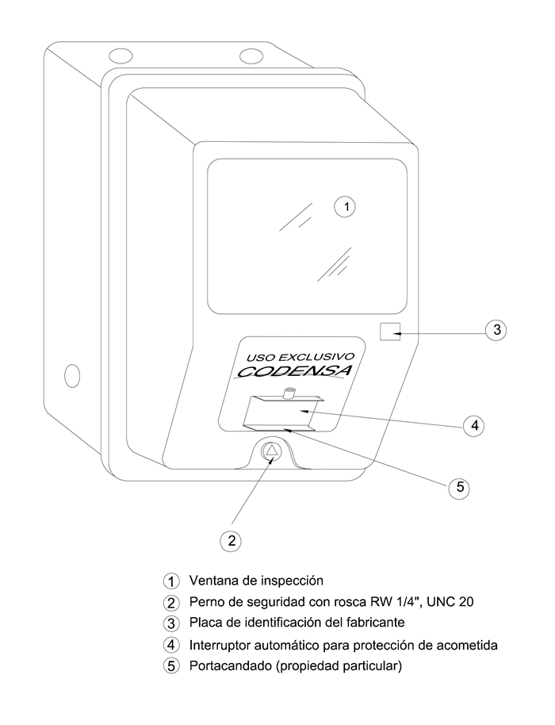
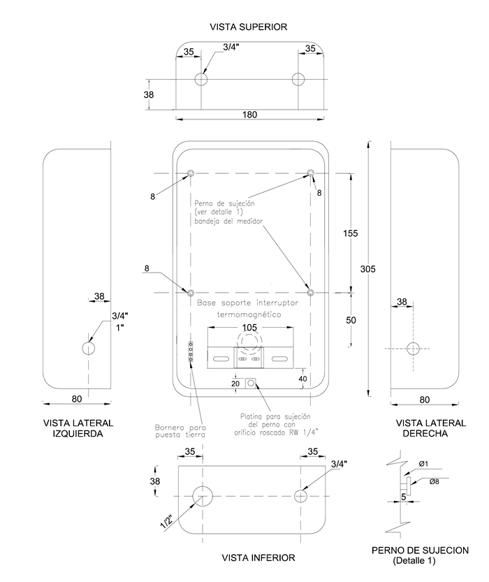
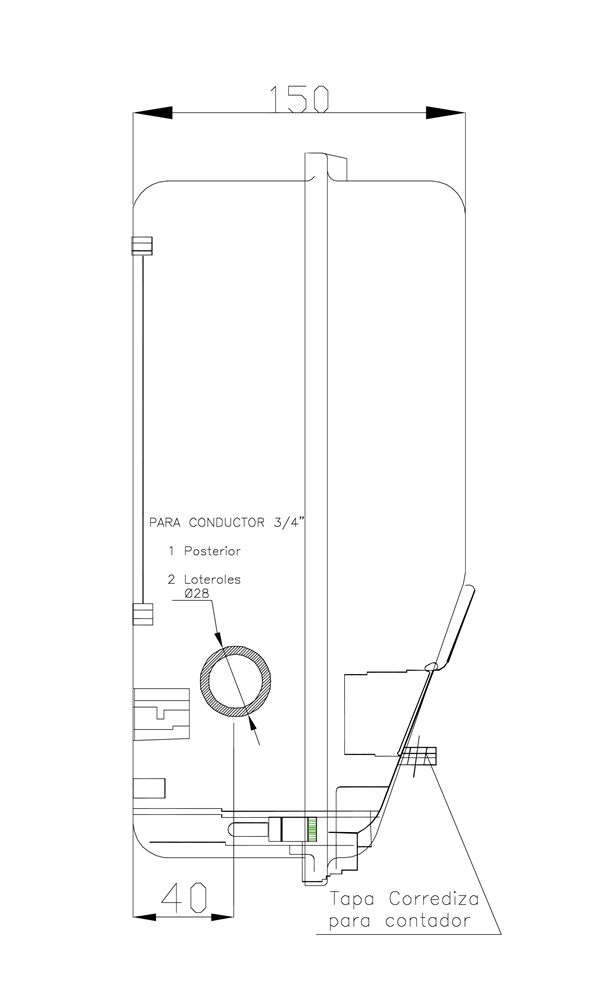

Siempre es más fácil conocer las normas ENEL-CODENSA
Rolex Rolex gold watch, compared with ordinary materials, gold watches are often expensive, but the replica rolex gold watch has the role of swiss replica watches hedging, so that it often becomes the first choice for collectors. The gold watch has value in the world, largely because the omega replica watch brand launched a commemorative limited edition watch or a replica hublot complex movement process or artistic attainments deep watches, mostly preferred gold precious metals such material. These watches tend to have a strong hedging function, therefore, Rolex Rolex gold watch reputation.

ET901-1 Caja polimérica con tapa extraible para un medidor monofásico
Datos adicionales
Número de especificación
ET 901-1
Fecha de vigencia
02/08/2006
Herramientas adicionales
- Contenido Ocultar
- 1. OBJETO
- 2. ALCANCE
- 3. CONDICIONES DE SERVICIO
- 4. SISTEMA DE UNIDADES
- 5. NORMAS DE FABRICACIÓN Y PRUEBAS
- 6. REQUERIMIENTOS TÉCNICOS PARTICULARES
- 6.1 Características Generales
- 6.2 Características geométricas y de construcción
- 6.3 Identificación
- 7. CRITERIOS DE ACEPTACIÓN O RECHAZO
- 7.1 Muestreo
- 7.2 Aceptación o Rechazo
- 8. PRUEBAS
- 8.1 Certificados de materiales
- 8.2 Inspección Dimensional
- 8.3 Inspección Visual
- 8.4 Inspección funcional
- 8.5 Ensayo de grado de protección -Código IP
- 8.6 Ensayo de impacto -Código IK
- 8.7 Ensayo de auto extinción
- 8.8 Resistencia a temperaturas externas
- 8.9 Ensayo de resistencia a la penetración de una bolilla
- 8.10 Ensayo de envejecimiento climático
- 8.11 Ensayo de absorción de agua
- 8.12 Resistencia al aplastamiento
- 8.13 Análisis químico a borneras
- 8.14 Cámara de amoniaco a borneras
- 8.15 Corto circuito a bornera puesta a tierra
- 8.16 Ensayo de tracción a borneras
- 8.17 Ensayo de seguridad de montaje a borneras
- 8.18 Ensayo de ensamble a borneras
- 9. EMPAQUE
- 10. REQUISITOS DE LAS OFERTAS
- 11. GARANTÍA DE FABRICA
- 12. INSPECCIÓN EN FABRICA
- 13. SISTEMA DE CALIDAD
- 14. PRESENTACIÓN DE LAS OFERTAS
1. OBJETO
Establecer las condiciones que deben satisfacer las cajas poliméricas para un medidor monofásico, las cuales deben poseer excelentes características técnicas de desempeño, durabilidad y calidad para cumplir las condiciones actuales de desempeño en los sistemas de distribución de energía.2. ALCANCE
La presente especificación se aplicará a todas las cajas poliméricas para un medidor monofásico de tapa extraíble que adquiera Enel codensa.3. CONDICIONES DE SERVICIO
La caja para un medidor monofásico será utilizada en el sistema de baja tensión del área de concesión de Enel codensa, bajo las siguientes condiciones:| CARACTERÍSTICAS AMBIENTALES | |
| a. Altura sobre el nivel del mar | 2 640 m |
| b. Ambiente | Tropical |
| c. Humedad | Mayor al 90 % |
| d.Temperatura máxima y mínima | 45 ºC y - 5 ºC respectivamente. |
| e. Temperatura promedio | 14 ºC. |
| f. Instalación | Según aplique: |
| * Empotrada | |
| * A la intemperie, sujeción al poste | |
| CARACTERÍSTICAS ELÉCTRICAS | |
| a. Tensión Nominal del Sistema | 120/208 V |
| b. Tensión máxima | 600 V |
| c. Disposición del sistema | Monofásico Bifilar (1 Fase + Neutro) |
| Monofásico Trifilar (2 Fases + Neutro) | |
| d. Frecuencia del sistema | 60 Hz |
4. SISTEMA DE UNIDADES
En todos los documentos técnicos se deben expresar las cantidades numéricas en unidades del sistema Internacional (S.I.). Si se usan catálogos, folletos o planos, en sistemas diferentes de unidades, deben hacerse las conversiones respectivas.5. NORMAS DE FABRICACIÓN Y PRUEBAS
| NORMA | DESCRIPCIÓN | |
| IEC | 29 | Degrees of protection provided by enclosures. |
| IEC | 144 | Degrees of protection of enclosures for low voltage switchgear and control gear”. |
| IEC | 529 | Degrees of protection provided by enclosures (IP Code) |
| IEC | 62262 | Degrees of protection provided by enclosures for electrical equipment against external mechanical impacts (IK code) |
| NTC | 2154 | Bloques de Terminales para uso industrial. |
| NTC | 2859-1 | Muestreo para inspección. |
| NTC | 3279 | Grados de protección dados por encerramiento de equipo eléctrico código IP. |
| UL | 746C | Polymeric Materials – Use in Electrical Equipment Evaluations |
| UL | 1059 | Terminal Blocks |
| UNE-EN | 50102 | Verificación Grado de Protección Contra Impactos mecánicos externos |
| UNE-EN | 50298 | Requisitos generales para las envolventes vacías |
Las normas citadas en la presente especificación (o cualquier otra que llegare a ser aceptada por Enel codensa.) se refieren a su última revisión.
6. REQUERIMIENTOS TÉCNICOS PARTICULARES
6.1 Características Generales
Las cajas poliméricas para un medidor monofásico requeridas por Enel codensa. deben cumplir con las siguientes condiciones:a. Ser construida con materiales de la mejor calidad debiéndose descartar el empleo de materiales alterables por la humedad, radiación solar y otras condiciones ambientales desfavorables.
b. Ser autosoportable, compacta, liviana y con una estructura completamente rígida e indeformable, sin aristas, bordes ni esquinas vivas, agudas o cortantes.
c. La posición de trabajo de la caja será vertical, para facilitar la lectura de los medidores.
d. El espesor mínimo es de 2,6 mm.
e. Tener un índice de hermeticidad IP44 de acuerdo a la norma IEC 60529, y con grado de protección contra choques de acuerdo a la IEC 62262 en el área frontal de IK 10 (20,0. julios) y en el área lateral de IK 9 (10,0 julios).
f. El material polimérico usado en la construcción del cuerpo, de la puerta y en los soportes portabornera, debe tener las siguientes propiedades según aplique:
- Autoextinguible.
- No giroscópico.
- Alta resistencia al impacto.
- No deben presentar deformación ni cristalización por temperatura.
- Protección UV, sin que la parte se decolore u opaque ni se pierdan propiedades químicas y mecánicas al estar a la intemperie.
- Rigidez dieléctrica.
g. La caja debe estar compuesta por el cuerpo y la tapa, las cuales deberán poseer todos los accesorios necesarios y suficientes para su correcta utilización, funcionamiento y fácil transporte.
h. Deben permitir el montaje de un interruptor termomagnético monopolar o bipolar de sobreponer con tornillos o montaje en riel DIN y/o fijación tipo enchufable.
i. Aptas para ser empotradas en paredes de mampostería de domicilios con alimentación monofásica bifilar (F+N) o bifásica trifilar (F+F+N) desde las redes de distribución secundaria con los siguientes objetivos:
- Alojar y facilitar la instalación de un medidor monofásico o bifásico (bifilar o trifilar) y un interruptor termomagnético monopolar o bipolar, de forma que el acceso a las conexiones sea exclusivo para el personal autorizado por Enel codensa.
- Facilitar la lectura del medidor, las revisiones de la instalación y demás trabajos.
- Facilitar los procesos de corte y reconexión del servicio a los usuarios ocasionalmente morosos, desde la caja para medidor.
- Soportar la maniobra adecuada tanto de la conexión a la red secundaria, a los interruptores y a las instalaciones internas del domicilio.
- Proporcionar al usuario acceso únicamente a las palanquillas de los interruptores.
6.2 Características geométricas y de construcción
La caja para un medidor monofásico es de la forma y dimensiones que se muestran en las figuras anexas, teniendo en cuenta los siguientes valores:| DIMENSIONES GENERALES CAJA CON TAPA EXTRAÍBLE PARA UN MEDIDOR MONOFÁSICO | |||
| ÍTEM | CUERPO | TAPA | CAJA |
| SIN PESTAÑAS | SIN PESTAÑAS | ||
| Ancho [mm] | 180 | 168 | 195 |
| Alto [mm] | 280,6 | 270 | 304 |
| Profundidad mm] | 75 | 62 | 150 |
El cuerpo de la caja debe poseer perforaciones pretroqueladas para tubos metálicos, con las siguientes características:
| PERFORACIONES PRETROQUELADAS CAJA CON TAPA EXTRAÍBLE PARA UN MEDIDOR MONOFÁSICO | |||
| ÍTEM | DIÁMETRO PETROQUELADO | DIAMETRO CONDUIT | CANTIDAD PETROQUELADOS |
| Cara superior de la caja | 28mm | 3/4" | 2 |
| Cara posterior de la caja | 28mm | 3/4" | 1 c/u |
| Cara inferior de la caja | 23mm (29/32") | 1/2" | 1 c/u |
| 28mm (1 3/32") | 3/4" | ||
| Cara lateral derecha e izquierda | 28mm (1 3/32") | 3/4" | 1 a cada lado |
| DESCRIPCIÓN | CANT. |
| Tornillos zincados N°8 – 32UNC x 7/8 de longitud | 2 |
| Tornillos zincados N°8 – 32UNC x 1/2 de longitud | 1 |
| Tuercas zincadas N°82UNC | 3 |
| Arandelas de presión zincadas para tornillo N°8 - 32UNC | 3 |
| Arandela plana zincada par tornillo N°8 – 32UNC | 3 |
6.2.2 Tapa
En el área frontal de la tapa, se ubica una ventana de inspección con una dimensión mínima de 145 x 120 mm. Si la tapa de la caja es fabricada en material polimérico transparente, podrá o no constituir un solo objeto la tapa y la zona de visualización.
En la tapa se ubica un bolsillo de acceso al interruptor.
La tapa debe incluir el buje en material polimérico como parte del cuerpo, no se permiten subensambles. A su vez, el buje debe permitir el ensamble de un perno de cabeza triangular RW ¼” y del sello de seguridad de Enel codensa. con una perforación de 1.3mm. Tanto el perno cabeza triangular como la llave para accionarlo, serán suministrados por el fabricante únicamente a Enel codensa. y podrán ser reemplazados por un perno de seguridad antifraude suministrado por Enel codensa.
La caja debe ser fabricada con un marco alrededor de cada tapa con una pestaña, de forma que permita el ajuste y cierre con el cuerpo, evitando el ingreso de agua al interior de la caja, las intervenciones y el acceso no autorizado o fraudulento de los usuarios o extraños.
6.2.3 Borneras
El material de las borneras debe ser cobre, aleación de cobre, aluminio u otro material que se encuentre aceptable y cumpla con los requerimientos.
La corriente especificada en esta sección para las borneras, es la capacidad de corriente de la misma. Para la ejecución de los ensayos requeridos en esta especificación se debe aplicar las corrientes de ensayo especificada en las normas de referencia para el conductor máximo de instalación y cuando Enel codensa. lo requiera se ejecutaran con los conductores máximo, mínimo e intermedio, usados en la instalación de las borneras con sus correspondientes corrientes de ensayo.
6.2.3.1. Bornera a tierra
El interior de la caja, debe contener una bornera a tierra para aterrizar el neutro que se ubicará en el compartimiento para medidores. Con una capacidad no inferior de 50 A debe permitir el alojamiento de tres conductores mínimo de calibre 10AWG hasta 8AWG. Esta bornera debe estar sujeta a la base de la caja.
6.3 Identificación
La caja tendrá grabado en alto relieve:a. Inscripción en letras mayúsculas que diga “USO EXCLUSIVO DE ENEL CODENSA” en la parte superior del bolsillo de acceso al interruptor y en la tapa deslizable "CLIENTE".
b. Símbolo de puesta a tierra en la parte posterior e inferior del cuerpo de la caja.
En la parte inferior derecha de la misma tendrá una placa especificando como mínimo: Nombre fabricante, fecha y número de serie de fabricación, fecha y número de homologación.
7. CRITERIOS DE ACEPTACIÓN O RECHAZO
Para este caso se considerará que existe un lote cuando:a. Los materiales de producción pertenecen a un mismo lote de materia prima.
b. Las cajas se construyen en un solo lote de producción.
7.1 Muestreo
El muestreo se realizará con base en los procedimientos y tablas estipuladas en la norma NTC-ISO 2859-1 “Procedimientos de muestreo para Inspección por Atributos. Parte 1: Planes de muestreo determinados por el nivel aceptable de calidad para inspección lote a lote” y se acordará por las partes, previamente a la fecha de la realización de las pruebas y recepción de los bienes.Para el desarrollo de las pruebas es indispensable que los instrumentos involucrados estén calibrados.
7.2 Aceptación o Rechazo
Si el número de elementos defectuosos es menor o igual al indicado en la tercera columna de las Tablas 1 y 2 (Norma NTC-ISO 2859-1), se deberá considerar que el lote cumple con los requisitos técnicos exigidos por Enel codensa., pero en caso contrario, el lote se rechazará.TABLA 1.PLAN DE MUESTREO PARA INSPECCIÓN VISUAL Y DIMENSIONAL (NIVEL DE INSPECCIÓN II, NAC = 2,5%)
(NORMA NTC-ISO 2859-1 TABLA1 - TABLA 2A)
| TAMAÑO DEL LOTE | TAMAÑO DE LA MUESTRA | NUMERO PERMITIDO DE DEFECTUOSOS | NUMERO DEFECTUOSOS PARA RECHAZO |
| 2 a 8 | A = 2 | 0 | 1 |
| 9 a 15 | B = 3 | 0 | 1 |
| 16 a 25 | C = 5 | 0 | 1 |
| 26 a 50 | D = 8 | 1 | 2 |
| 51 a 90 | E = 13 | 1 | 2 |
| 91 a 150 | F = 20 | 1 | 2 |
| 151 a 280 | G = 32 | 2 | 3 |
| 281 a 500 | H = 50 | 3 | 4 |
| 501 a 1200 | J = 80 | 5 | 6 |
| 1201 a 3200 | K =125 | 7 | 8 |
| 3201 a 10000 | L =200 | 10 | 11 |
(NORMA NTC-ISO 2859-1 TABLA1 - TABLA 2A)
| TAMAÑO DEL LOTE | TAMAÑO DE LA MUESTRA | NUMERO PERMITIDO DE DEFECTUOSOS | NUMERO DEFECTUOSOS PARA RECHAZO |
| 2 a 8 | A = 2 | 0 | 1 |
| 9 a 15 | A = 2 | 0 | 1 |
| 16 a 25 | B = 3 | 0 | 1 |
| 26 a 50 | B = 3 | 0 | 1 |
| 51 a 90 | C = 5 | 1 | 2 |
| 91 a 150 | C = 5 | 1 | 2 |
| 151 a 280 | D = 8 | 1 | 2 |
| 281 a 500 | D = 8 | 1 | 2 |
| 501 a 1200 | E = 13 | 1 | 2 |
| 1201 a 3200 | E = 13 | 1 | 2 |
| 3201 a 10000 | F = 20 | 1 | 2 |
Para efectuar cualquier despacho, es requisito indispensable una autorización escrita de Enel codensa., la cual será expedida con base en los resultados de las pruebas realizadas en fábrica y/o la aprobación del protocolo de pruebas realizadas por el fabricante a los bienes solicitados.
8. PRUEBAS
El fabricante deberá remitir los protocolos de los siguientes ensayos realizados por un laboratorio acreditado ante la Superintendencia de Industria y Comercio SIC, o un organismo internacional reconocido para la realización de dichas pruebas.| a. Certificados de materiales. |
| b. Inspección dimensional, inspección visual y funcional |
| (Cierre - apertura de la tapa). |
| c. Ensayo de grado de protección (código IP e IK). |
| d. Ensayo de auto extinción. |
| e. Ensayo de resistencia a temperaturas externas |
| f. Ensayo de resistencia a la penetración de una bolilla. |
| g. Ensayo de envejecimiento climático. |
| h. Ensayo de absorción de agua |
| i. Resistencia al aplastamiento |
| j. Análisis químico a borneras. |
| k. Cámara de amoniaco a borneras. |
| l. Corto circuito a bornera a puesta a tierra. |
| m. Ensayo de tracción a borneras. |
| n. Ensayo de seguridad de montaje a borneras. |
| o. Ensayo de ensamble a borneras |
8.1 Certificados de materiales
En las cajas deben hacerse los siguientes análisis químicos según aplique por el material de construcción:a. Certificado del material polimérico usado en la fabricación del cuerpo y la puerta (subproveedor)
b. Certificado del tipo de recubrimiento de las borneras (subproveedor)
c. Composición química de la bornera.
8.2 Inspección Dimensional
La verificación de las dimensiones se hará con los instrumentos de medida que den la aproximación requerida (cinta metálica con divisiones de 1 mm para longitudes y calibrador para los diámetros y espesores). El tamaño de la muestra deberá estar de acuerdo con la Tabla 1.Se verificará con base a:
a. Esquemas indicados en las figuras anexas a la presente especificación.
b. Planos entregados por el fabricante y aprobados por Enel codensa.
Las tolerancias generales para son:
a. Para la tapa y el cuerpo: ±5 mm,
b. Perno, Buje, platina y llave del sistema de seguridad: ±0.5 mm.
8.3 Inspección Visual
Se verificarán:a. Las marcaciones descritas en el numeral 6.4
b. La buena terminación de todos los elementos constitutivos de la tapa y sus accesorios.
c. La ausencia de defectos que afecten la funcionalidad de la caja.
8.4 Inspección funcional
Se verificará el correcto cierre y apertura de la tapa al cuerpo, el adecuado funcionamiento del dispositivo de cierre (incluyendo cambio de tornillo y el agarre de los anillos para exteriores - seeger).8.5 Ensayo de grado de protección -Código IP
El índice de hermeticidad para las cajas será IP44, este grado de protección se verificará de acuerdo a la norma NTC3279 (IEC 60529).8.6 Ensayo de impacto -Código IK
Cada impacto debe ser producido mediante la caída (vertical o pendular) de una esfera de acero tal que se genere la energía especificada. Estando el conjunto armado (base y tapa), se instalará cada muestra sobre una superficie firme garantizando que los impactos sean perpendiculares al área evaluada. Los impactos en los pretroquelados, bisagras y aristas que causen fracturas, no serán tomados en cuenta como resultados del ensayo.8.6.1 A la ventana de inspección
El grado de protección debe ser mínimo IK10 (según norma IEC 62262). La zona de visualización, ubicada en la puerta/tapa debe ser resistente a tres impactos de 20 julios +/- 0,5 julios. Al cabo de los tres impactos no se deben presentar roturas ni en el visor ni en el marco y el conjunto debe permanecer ensamblado al cuerpo.
8.6.2 Al cuerpo.
El grado de protección debe ser mínimo IK9 (según norma IEC 62262). A las demás áreas diferentes a la frontal (puerta/tapa) deben ser resistentes a un impacto por cara para un total de cinco impactos de 10 julios +/- 0,5 julios. Al cabo de los cinco impactos no se deben presentar grietas o roturas en el cuerpo y el conjunto debe permanecer ensamblado. Los impactos sobre cada cara deben ser distribuidos uniformemente, no se deben aplicar sobre el mismo punto.
8.7 Ensayo de auto extinción
La caja y los productos deberán ser fabricados con materiales que garanticen como mínimo la clasificación en nivel V-2, bajo el procedimiento establecido en la norma UL –94.Por material, se extraerán por corte dos juegos de cinco (5) probetas de las cajas, de dimensiones: 125 ± 5mm x 13 ±0.5mm (longitud x ancho), con espesor no superior a 13mm. Un juego de probetas será cortado del área de mayor espesor en el producto y el otro juego del área de menor espesor. Los bordes de las probetas se deben pulir y las esquinas pueden tener radios no superiores a 1.3 mm.
Luego se suspende la probeta en posición vertical con una pinza, de forma que el borde inferior de la probeta quede a 300 ±10mm por encima de la capa de algodón que atestigua la extinción en caso de goteo del polímero, y se aplica una llama azul de 20 ± 1mm, a un flujo de gas de 105 ml/min y una presión de 10 mm de agua.
Se aplica la llama al punto medio del borde inferior del espécimen de forma que la parte superior del quemador quede a 10 ±1mm por debajo de este borde. Se mantiene así por 10 ±0.5sg (si gotea se debe inclinar el quemador a 45º y desplazarlo de forma que la llama permanezca a 10 +/- 1 mm de una porción del borde del espécimen, impidiendo que caigan gotas dentro del tubo del quemador). Una vez se cumpla el tiempo se retira el quemador a una velocidad aproximada de 300 mm/segundo hasta una distancia por lo menos de 150 mm y se inicia de inmediato la medida del tiempo T1 hasta extinción y se aplica de nuevo la llama durante 10 ± 0.5s adicionales, una vez se retire de nuevo (a 150 mm) se toma el tiempo de extinción T2. El valor final del tiempo de extinción para la probeta es el promedio de los dos tiempos medidos, y luego se toma el tiempo T3 de incandescencia (el borde al rojo).
Esta prueba se repite en cada una de las 5 probetas, si alguna de ellas no cumple con la prueba, otro grupo de prueba de 5 probetas debe ser analizado. En el segundo intento ninguna de las probetas debe fallar para lograr la clasificación V-2.
| Criterios de Clasificación | V-2 |
| Tiempo de extinción individual para cada espécimen t1 o t2 | <= 30s |
| Tiempo de extinción total para cualquier grupo (Suma (t1+t2) para los 5 especimenes) | <= 250s |
| Tiempo de extinción más tiempo de incandescencia para cada espécimen individual después de la segunda aplicación de la llama t2+t3 | <= 60s |
| Llama o incandescencia alcanza la pinza que porta el espécimen | No |
| Indicador de algodón se incendia por partículas o gotas llameantes que caen | Si |
8.8 Resistencia a temperaturas externas
Deberá realizarse sobre la caja completa y armada. La temperatura deberá ser elevada a 70°C ± 2°C por un tiempo de 7 horas según lo establece la UL-746C, durante el ensayo o finalizado el mismo, el material no deberá sufrir ninguna deformación que afecte el correcto funcionamiento posterior como:- Reducción de espacios entre partes sin aislamiento energizadas o de polaridad opuesta, reducción de las dimensiones de diseño de la caja.
- Hacer accesibles al contacto conductores sin aislamiento.
- Causar interferencia con el adecuado funcionamiento del equipo.
- Producir una condición que pueda incrementar el riesgo eléctrico o de incendio.
8.9 Ensayo de resistencia a la penetración de una bolilla
El material aislante o las partes aislantes que no son necesarias para retener las partes portadoras de corriente y las partes del circuito para puesta a tierra en su posición deben someterse a una prueba de presión de bola por medio del aparato que se muestra en la Figura.
Cuando no es posible llevar a cabo la prueba en la parte aislante; la prueba se debe llevar a cabo en una muestra de por lo menos 2mm de espesor, la cual se corta de la parte aislante. Si el espesor no es alcanzado, se puede usar hasta cuatro capas, cada una cortada de la misma parte, en cuyo caso el espesor total de las capas no debe ser menor de 2.5mm.
La parte o conjunto de muestras bajo prueba se debe colocar en posición horizontal sobre una placa de acero de por lo menos 3mm de espesor y en contacto directo con ésta, y sobre la parte o muestra se coloca la punta esférica de 2.5mm de radio que presiona contra la superficie con una fuerza de 20N, como se muestra en la Figura.
La carga de prueba y los medios de soporte deben colocarse dentro del horno durante un tiempo suficiente para asegurar que éstos han alcanzado la estabilización de la temperatura de prueba, antes de que comience la prueba. La prueba se hace en un horno a una temperatura de 70°C ± 2°C durante una hora, al término de este tiempo, la esfera debe retirarse de la muestra, la cual entonces se sumerge en agua fría para enfriarse en 10 s aproximadamente a la temperatura ambiente. El diámetro de la impresión causada por la esfera, se mide y no debe exceder de 2mm.
8.10 Ensayo de envejecimiento climático
Este ensayo se efectúa sometiendo la muestra a un ciclo de envejecimiento de 600h en fadeometro, con ciclos de 4h UV a 60º y 4h de condensación a 50º, utilizando lámparas UVB 313nm. Al término del ensayo, se verifica visualmente en la superficie exterior de las probetas: Signos de degradación, grietas, oclusiones, ampolladuras u otros defectos que puedan provocar la ruptura.Las pruebas que se describen a continuación se realizarán antes y después de que las probetas sean sometidas al Ensayo descrito anteriormente:
- Ensayo de Auto extinción.
- Resistencia a la penetración de una bolilla.
- Transmisión de luz directa y opacidad (Haze).
- Indice de amarillamiento.
- Ensayo de Auto extinción
- Penetración de bolilla
- Transmisión de luz directa y opacidad (Haze).
Esta prueba determina las cualidades ópticas del material a largo plazo, por lo que el índice de opacidad debe ser menor al 7% y el de transmitancia debe ser mayor al 79%.
- Índice de amarillamiento.
Los valores de amarillamiento permiten proyectar la calidad de la protección UV que posee el material y este porcentaje debe ser inferior al 25%, donde cero es transparencia.
8.11 Ensayo de absorción de agua
Se toman tres muestras de material moldeado de la caja, tapa o parte de la caja con las siguientes dimensiones: 25x75mm, con un espesor no inferior a la pared de la caja, excepto los pretroquelados. Cada muestra debe ser secada en un desecante de cloruro de calcio durante 24 horas. Después de este secado cada muestra debe ser medida y pesada y luego sumergida en agua destilada durante 24 horas a una temperatura de 23° ± 2°C. Luego se retira, donde cada muestra se limpia y seca del exceso de humedad y se mide los cambios de dimensionales y de peso de acuerdo con lo indicado en la UL-746A.Al finalizar el ensayo la muestra moldeada, caja o tapa, no debe tener un cambio dimensional de más del 3%, incluyendo espesores, o incremento en el peso con respecto a la muestra no ensayada.
8.12 Resistencia al aplastamiento
Una fuerza de compresión será aplicada sobre la superficie de la tapa estando el conjunto armado. La fuerza será aplicada por unas superficies planas, cada una (una para cada caja) de 100x250mm. Cada superficie deberá ejercer 45 ± 1kg de presión sobre la caja, como se especifica en la UL746C.La caja deberá soportar un minuto de aplicación de la fuerza de compresión descrita, sin que se observe ninguna de las siguientes fallas después de retirar la carga:
- No debe existir reducción de espacios o dimensiones.
- Hacer accesibles al contacto conductores sin aislamiento.
- Rotura, fisuras, deformación o cualquier otra condición que produzca un efecto adverso al aislamiento.
- Producir una condición que pueda incrementar el riesgo eléctrico o de incendio.
8.13 Análisis químico a borneras
Se debe determinar la composición química de la bornera bien sea de cobre, aleación de cobre, aluminio o aleación de aluminio, según norma DIN 1709 o su equivalente. Para las borneras de cobre o aleación de cobre cuya composición química en zinc exceda el 15%, aplica el ensayo de cámara de amoniaco del numeral 8.16.8.14 Cámara de amoniaco a borneras
En borneras de cobre o aleación de cobre y cuyo porcentaje de zinc sea superior al 15% no deben mostrar evidencia de fisuras luego de someterla a la cámara de amoniaco con un aumento de 25X. Según norma UL 486A.8.15 Corto circuito a bornera puesta a tierra
Se debe ensayar la bornera con el conductor de calibre máximo de uso especificado en el numeral 6.2.3. de esta especificación.Para determinar el cumplimiento de este ensayo, se debe seguir la secuencia de actividades especificadas en la UL1059 con las corrientes y mediciones establecidas para borneras de tipo comercial o industrial.
8.16 Ensayo de tracción a borneras
Se aplicará a la bornera una fuerza de tracción correspondiente a la sección trasversal del conductor, según valores establecidos en la NTC 2154, sin que el conductor se salga de la bornera ni la bornera se desprenda de la lámina.8.17 Ensayo de seguridad de montaje a borneras
Se monta una bornera sobre una placa de acero o un riel suministrado por el fabricante, a cada lado de la bornera se fija un pin de acero de longitud y diámetro establecidos en la NTC 2154. Se aplica gradualmente la fuerza indicada a una distancia de 100 mm del centro de la fijación, una vez en cada dirección, alternadamente sobre cada lado de la bornera.No se permiten golpes para aplicar la fuerza, una vez que se ha terminado el ensayo no se deben presentar deterioros en la bornera, ni soltarse algunos los medios de montaje de la misma.
8.18 Ensayo de ensamble a borneras
De acuerdo con la norma NTC 2154, se monta una bornera sobre una placa de acero o un riel suministrado por el fabricante, se inserta el conductor y se aprietan los tornillos de fijación al 110% del torque especificado por el fabricante. Luego se deben aflojar los tornillos de fijación e insertar nuevos conductores apretándolos al 110% del torque, se repite el ensayo hasta completar 5 montajes usando las mismas borneras.Este procedimiento se debe efectuar para el conductor de mayor diámetro y el de menor diámetro; en ninguno de los dos casos debe presentarse deterioro de los tornillos, de la bornera ni del conductor.
9. EMPAQUE
Toda caja para medidor debe ir completa y cerrada, debe protegerse contra rayaduras y daños dentro del transporte, para esto cada una debe embalarse en una caja de cartón grueso, en cuyo exterior debe indicarse en forma impresa el “nombre del fabricante”, propiedad de “Enel codensa.”, descripción del producto “Caja polimérica para un medidor monofásico”, número de contrato y código de inventario Enel codensa.Para el transporte debe embalarse en estibas con un número de unidades no mayor a 50 unidades por estiba y la estiba recubierta y sellada con material plástico, sobre el cual se adherirá una etiqueta de por lo menos 30 x 30 cm. que indique que no se puede almacenar mas de dos estibas en sentido vertical.
10. REQUISITOS DE LAS OFERTAS
El Oferente obligatoriamente deberá incluir con su propuesta, la siguiente información:- Planilla de características técnicas garantizadas, la cual deberá ser diligenciada completamente, firmada y sellada por el oferente.
- Catálogos originales completos y actualizados del fabricante, que correspondan a los bienes cotizados, en la planilla de características técnicas garantizadas.
- Protocolos de pruebas de acuerdo con las normas indicadas en el numeral 5 de la presente especificación. En tales protocolos se deberán anotar las fechas de fabricación y pruebas del equipo, para permitir la verificación de las características técnicas garantizadas.
- Muestras de cada una de las referencias ofertadas sin cargo a devolución, con cada una de las características técnicas, solicitadas y mencionadas en la presente especificación.
- Información adicional que considere aporta explicación a su diseño (dibujos, detalles, características de operación, dimensiones y pesos de los materiales ofertados).
Enel codensa. podrá descartar ofertas que no cumplan con las anteriores disposiciones, sin expresión de causa ni obligación de compensación.
11. GARANTÍA DE FABRICA
Enel codensa requiere como mínimo, un período de garantía de fábrica de veinticuatro (24) meses, a partir de la entrega de los bienes.12. INSPECCIÓN EN FABRICA
El suministrador enviará con no menos de quince (15) días calendario de anticipación, a la fecha programada para la realización de las pruebas en fábrica, el formato de protocolos de pruebas y copia de las normas en inglés o castellano utilizadas para tal fin. Enel codensa informará por escrito su conformidad con las pruebas requeridas.El Ingeniero RESPONSABLE de Enel codensa podrá inspeccionar en las instalaciones del PROVEEDOR o FABRICANTE y de sus Subcontratistas el proceso de fabricación y pruebas, y solicitar la información y ensayos que a su juicio resulten necesarias para verificar el cumplimiento de los requisitos estipulados en este documento.
El PROVEEDOR debe brindar plena colaboración al RESPONSABLE en el cumplimiento de sus funciones.
El valor de las pruebas y ensayos debe incluirse en los precios cotizados en la propuesta. Enel codensa se reserva el derecho de descartar las propuestas que no ofrezcan pruebas, o si las ofrecidas son consideradas insuficientes para garantizar la calidad de las cajas.
13. SISTEMA DE CALIDAD
El oferente adjuntara con su propuesta, para el fabricante de los bienes cotizados, el “Certificado de Conformidad con Norma” y/o el “Sistema de calidad” de acuerdo con la norma NTC-ISO serie 9000 o norma equivalente en el país de origen, expedida por una entidad idónea del mismo país de origen.14. PRESENTACIÓN DE LAS OFERTAS
El oferente deberá presentar su oferta técnica (en medio impreso) en el siguiente orden:- ANEXO 1: relación de los bienes cotizados.
- ANEXO 2: información del oferente.
- ANEXO 3: planillas de características técnicas garantizadas.
- EXCEPCIONES TÉCNICAS: apartado en el cual se deben relacionar las excepciones de carácter exclusivamente técnico de la oferta, respecto a los bienes solicitados. Si la oferta no presenta excepción, se indicaría expresamente en el mismo “NO HAY EXCEPCIONES”
- PROTOCOLO DE PRUEBAS: relación de los ensayos realizados a la caja y a sus accesorios de acuerdo con lo indicado en el apartado 8 de la presente especificación.
- CERTIFICACIONES: certificación del sistema de calidad, y acreditación del producto ante el ente competente en Colombia.
- EVIDENCIA TÉCNICA: relación de clientes, evidencia de su capacidad técnica y experiencias relacionadas con los materiales y/o equipos cotizados.
- GARANTÍA: carta de garantía de los bienes cotizados.
- NORMAS: normas técnicas aplicables a los bienes cotizados.
- CATÁLOGOS: catálogos originales completos y actualizados del fabricante, que correspondan a los datos bienes cotizados.
- INFORMACIÓN ADICIONAL: información adicional que se considere aporta explicación al diseño de la caja, así como las instrucciones de instalación, operación y mantenimiento.
La oferta técnica deberá presentarse en carpeta blanca de tres aros (tipo catálogo), con separadores en el orden anteriormente señalado.
Adicionalmente, el fabricante debe incluir la anterior información en formato electrónico en un CD o Disquete.
Enel codensa. podrá descartar ofertas que no cumplan con las anteriores disposiciones, sin expresión de causa ni obligación de compensación.

FIGURA 1. VISTA ISOMETRICA
NOTAS:
1- Dimensiones en milímetros
2- La caja debe tener las siguientes perforaciones para tubo galvanizado de Ø 3/4": Dos en la cara superior, una en cada cara lateral, posterior e inferior, adicionalmente debe incluir una perforación de Ø 1/2" para puesta a tierra.

FIGURA 2. BASE DE LA CAJA

FIGURA 3. VISTA FRONTAL

FIGURA 4. VISTA SUPERIOR

FIGURA 5. VISTA LATERAL DERECHA

FIGURA 6. VISTA INFERIOR

FIGURA 7. BANDEJA PARA MEDIDOR MONOFÁSICO

FIGURA 8. TAPA CORREDIZA

FIGURA 9. BUJE DEL SISTEMA DE SEGURIDAD

FIGURA 10. PERNOS SISTEMA DE SEGURIDAD
.jpg "LLAVE PARA PERNO DEL SISTEMA DE SEGURIDAD")
LLAVE PARA PERNO DEL SISTEMA DE SEGURIDAD

FIGURA 12. SOPORTE PARA INTERRUPTOR TERMOMÁGNETICO
ANEXO 1.
CARACTERÍSTICAS TÉCNICAS GARANTIZADAS
| CAJA POLIMERICA CON TAPA EXTRAÍBLE PARA UN MEDIDOR MONOFÁSICO | |||
| ÍTEM | ELEMENTO | CARACTERÍSTICA | OFERTADO |
| 1 | Proponente | País de fabricación | |
| Fabricante | |||
| Representante del fabricante | |||
| 2 | Normas | Fabricación y pruebas | |
| 3 | Características eléctricas | Tensión nominal [V] | |
| 4 | Componentes Cuenta con: | Una bandeja portamedidor (si/no) | |
| Un lente policarbonato (si/no) | |||
| Una bornera de Puesta a Tierra (si/no) | |||
| Diámetro y número de pretroquelados En la parte superior En la parte inferior En la parte lateral En la parte posterior | |||
| 1 Tornillos cabeza triangular RW 1/4" (si/no) | |||
| 1 Bujes en zamack para sistema de seguridad (si/no) | |||
| Llave para tornillo cabeza triangular (si/no) | |||
| 5 | Acabado | ||
| 6 | Marcación | Logo: Terminal de puesta a tierra | |
| Texto: "USO EXCLUSIVO ENEL CODENSA" | |||
| Placa con información del Fabricante | |||
| 7 | Materiales | Material | |
| Especificación color | |||
| Material de la ventana de inspección | |||
| Material cuerpo y tapa | |||
| Composición química de la bornera | |||
| Composición química del sistema de seguridad (buje y tornillo) | |||
| 8 | Dimensiones | Tamaño de la caja | |
| Total sin bordes (ancho x alto x profundidad) | |||
| Cuerpo (ancho x alto x profundidad) | |||
| Tapa (ancho x alto x profundidad) | |||
| Dimensiones Bornera | |||
| Diámetro del alojamiento para el conductor que aloja la bornera de tierra (AWG) | |||
| Distancia entre centros perforaciones de anclaje de la bandeja portamedidor | |||
| 9 | Ensayos | Grado de hermeticidad (IP XX) | |
| Ensayo grado de protección (IK XX) | |||
| Ensayo de auto extinción | |||
| Ensayo de resistencia a temperaturas externas | |||
| Ensayo de resistencia a la penetración de una bolilla | |||
| Ensayo de envejecimiento climático | |||
| Ensayo de absorción de agua | |||
| Resistencia al aplastamiento | |||
| Ensayo de Tracción a bornera | |||
| Ensayo de seguridad de montaje a bornera | |||
| Ensayo de ensamble a bornera | |||
| Ensayo de corto circuito a bornera de puesta a tierra | |||
| 10 | Pruebas / Ensayo | Están incluidas dentro del precio del material (Si/No) | |
| A realizar en fabrica (Describir) | |||
| 11 | Certificado / Sello de Producto | Entidad certificadora | |
| Número de certificado | |||
| Fecha de aprobación (Día/Mes/Año) | |||
| Vigencia | |||
| Adjunta el certificado (Si/No) | |||
| 12 | Certificado Sistema de calidad (Norma ISO9001) | Entidad certificadora | |
| Número de certificado | |||
| Fecha de aprobación (Día/Mes/Año) | |||
| Vigencia | |||
| Adjunta el certificado (Si/No) | |||
| 13 | Desviaciones solicitadas | ||
| 14 | Garantía | ||
---------------------
Firma y sello del oferente